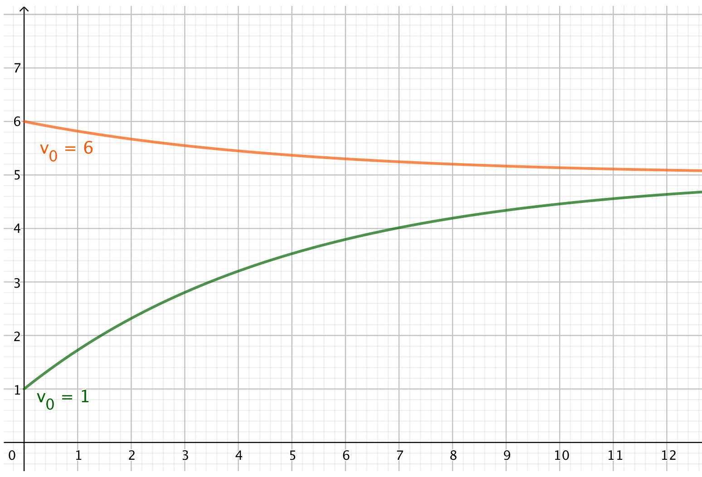

Capítulo 12 Ecuaciones diferenciales
12.1 Introducción
Al mirar la interpretación física de las derivadas, partíamos de una función, por ejemplo la velocidad de un objeto, y derivando la velocidad podíamos obtener la aceleración del objeto. Pero casi siempre el problema que tenemos es el contrario: sabemos las fuerzas sobre el objeto, que gracias a la segunda ley de Newton nos da la aceleración, y a partir de aquí queremos obtener su velocidad y posición. Es el problema inverso al que hemos visto hasta ahora. Estudiémoslo.
Empecemos con un caso muy simple. Supongamos que la aceleración \(a(t)\) es constante. Entonces
\[\frac{dv(t)}{dt} = a\]
No hemos de derivar la función, sino que tenemos que encontrar una función cuya derivada es la constante \(a\). Es un caso muy simple, casi obvio: \[v(t) = at + C\] Ahora no estamos calculando un área o sumando, sino hallando una función, luego la constante de integración es necesaria. Para obtener el valor de esta constante hemos de conocer la velocidad en algún momento Típicamente, sabemos la velocidad en el instante inicial: \(v(0) = v_0\). Luego nos queda la función \[v(t) = v_0 + at.\]
Si ahora queremos saber la función de la posición del objeto, \(s(t)\), hemos de encontrar una función que al derivarla nos dé la velocidad: \[\frac{ds(t)}{dt} = v_0 + at\] Otra vez, es un caso muy simple: \[s(t) = v_0t + \frac{1}{2}at^2 + C.\] Para hallar el valor de la constante necesitamos saber la posición en algún instante concreto. Típicamente, la sabemos en el instante inicial, \(s(0) = s_0\) y obtenemos así: \[s(t) = s_0 + v_0t + \frac{1}{2}at^2.\]
Hemos deducido las ecuaciones del movimiento uniformemente acelerado.
Seguramente casi todos se han dado cuenta que lo que hemos hecho es integrar dos veces. Este es un problema tan simple que hemos podido encontrar las funciones simplemente integrando. Pero normalmente las situaciones son más complicadas.
Supongamos que dejamos caer una pelota. Sabemos que la gravedad actúa sobre ella, con una fuerza constante \(F = -mg\) (seguimos la convención que hacia arriba es positivo y hacia abajo, negativo). Hay también un rozamiento aerodinámico, que se opone al movimiento, que es proporcional al cuadrado de la velocidad. La suma de ambas fuerzas es \[F = -mg - kv(t)^2.\] Aplicando la ley de Newton tenemos \[ma(t) = -mg - kv(t)^2.\] Dada que la posición es vertical, la llamaremos \(y(t)\). La velocidad es la primera derivada de la posición, y la aceleración es la segunda derivada de la posición. La ecuación queda: \[m\frac{d^2y(t)}{dt^2} = -mg - k\left(\frac{dy(t)}{dt}\right)^2.\] Para saber cómo se mueve muestra pelota, hemos de encontrar una función \(y(t)\) que cumpla esta ecuación. Ahora ya no basta con integrar.
En estas ecuaciones aparece no sólo la función, sino también una o más derivadas de la función. Por eso reciben el nombre de ecuaciones diferenciales.
Las leyes físicas, como la segunda ley de Newton, dan lugar de forma natural a ecuaciones diferenciales. Plantear un problema de mecánica, electricidad o termodinámica se convierte en encontar la ecuación diferencial asociada. Resolver el problema se convierte así en resolver la ecuación diferencial. Plantear ecuaciones diferenciales es relativamente sencillo. Resolverlas es, en general, enormemente complicado. Se saben resolver muy pocas.
Por eso, aparte de la resolución de ecuaciones diferenciales, hay métodos para entender las características de las ecuaciones sin tener que resolverlas. Podemos saber bajo qué condiciones un sistema se estable o inestable, si oscila o no, si tiende a ciertos valores o no. Muchas de estas características se pueden deducir de las ecuaciones diferenciales sin necesidad de resolver la ecuación.
Y si es necesario resolverla, hay métodos numéricos que nos pueden ayudar. Son métodos mucho más complicados que los que vimos para el cálculo de integrales, y con resultados más inciertos.
El mundo de las ecuaciones diferenciales es muy complicado, pero es la base de la física y la química, y por lo tanto de la ingeniería. Hemos de adentrarnos en él. En esta breve introducción vamos a conocer las características de una ecuación diferencial y vamos a aprender a resolver algunas especialmente sencillas.
12.1.1 Notación
Ya vimos que podemos escribir una derivada como \(\frac{dy}{dx}\) o como \(y^\prime(x)\). Esto da lugar a que se pueda escribir una ecuación diferencial de varias maneras. Como las ecuaciones diferenciales se usan mayoritariamente para saber cçomo evoluciona un sistema en el tiempo, a menos que especifiquemos otra cosa, vamos a suponer que la variable es el tiempo \(t\). A la función la denotaremos con \(x(t)\). Sabiendo esto, para simplificar la notación, no escribiremos la variable de la función: usaremos \(x\) o \(x^\prime\) y no \(x(t)\) o \(x^\prime(t)\).
Hay 3 notaciones ampliamente usadas para escribir una ecuación diferencial. Una es la notación de Leibniz. Es la que hemos usado arriba. Una ecuación diferencial en esta notación tiene la forma
\[m\frac{d^2 x}{dt^2} + b\frac{dx}{dt} + kx = 0.\]
La segunda notación es la notación primada:
\[mx^{\prime\prime} + b x^{\prime} + kx = \sin(t)\]
La tercera notación habitual es la notación de Newton que, por motivos históricos, se usa en mecánica. Un punto sobre la variable significa su derivada, dos puntos la derivada segunda, etc.:
\[m\ddot{x} + b\dot{x} + kx = \cos(\omega t + \phi)\]
También es costumbre poner a la izquierda todos los téminos que tienen que ver con \(x(t)\) y su derivada, y a la derecha los que son constantes o dependen sólo de \(t\). A esto se llama la forma general de la ecuación.
12.2 Clasificación de las ecuaciones diferenciales
Podemos clasificar las ecuaciones diferenciales según algunas características.
- Orden: El orden de una ecuación diferencial es el orden mayor de las derivadas involucradas en la ecuación.
Por ejemplo \[m\frac{d^2 x}{dt^2} + b\frac{dx}{dt} + kx = 0\] es una ecuación de segundo orden, ya que hay una derivada segunda, mientras que \[m\frac{dv}{dt} + k v^2 = -mg\] es una ecuación diferencial de primer orden, pues sólo hayuna derivada primera.
- Grado: El grado de una ecuación diferencial es la potencia a la que está elevada la derivada de mayor orden.
Por ejemplo \[m\frac{d^2x}{dt^2} + k\left(\frac{dx}{dt}\right)^2= -mg\] es una ecuación de primer grado, mientras que \[(x^\prime x t)^3 -7x = t\] es una ecuación diferencial de tercer grado.
- Linealidad: Un ecuación diferencial de orden \(n\) es lineal si es lineal en \(x, x^\prime, x^{\prime\prime}, \dots, x^{(n)}\). Es decir, toma la forma \[a_n(t)x^{(n)} + a_{n-1}(t)x^{(n-1)} + \cdots + a_1(t)x^\prime + a_0(t)x = g(t).\] Nótese que las \(a_i(t)\) pueden depender de \(t\) pero no pueden depender de \(x\). Si alguno dependiera de \(x\) ya no sería lineal.
Si todos los coeficientes \(a_i\) son constantes (no dependen ni de \(x\) ni de \(t\)), se dice que es una ecuación diferencial lineal de coeficientes constantes.
- Homogeneidad: Una ecuación lineal es homogénea si \(g(t) = 0\), es decir, si no hay “nada” en el lado derecho de la ecuación. Por ejemplo \[m\frac{d^2 x}{dt^2} + b\frac{dx}{dt} + kx = 0\] es una ecuación diferencial lineal de coeficientes constantes y homogénea, mientras que \[x^{\prime\prime} + t x^{\prime} + kx = \sin(t)\] es una ecuación diferencial lineal, pero ni tiene coeficientes constantes, ni es homogénea.
Ejemplo 12.1 La ecuación diferencial \[ml \frac{d\theta^2}{dt^2} + kl\frac{d\theta}{dt} + mg\sin(\theta) = 0\] es una ecuación de segundo orden y de primer grado, pero no es lineal porque tenemos \(\sin(\theta)\). Es una ecuación diferencial muy difícil de resolver.
Si nos limitamos a valores pequeños de \(\theta\) podemos aproximar \(\sin(\theta)\) por su polinomio de Taylor: \(\sin(\theta) \approx \theta\). La ecuación resultante es \[ml \frac{d\theta^2}{dt^2} + kl\frac{d\theta}{dt} + mg\theta = 0.\] Esta ecuación diferencial es lineal, de coeficientes constantes y homogénea y es mucho más fácil de resolver.Como hemos dicho varias veces, resolver ecuaciones diferenciales es en general muy difícil. Vamos a aprender a resolver dos casos, posiblemente los dos más simples. Ecuaciones diferenciales de primer orden de variables separables y ecuaciones diferenciales de primer orden lineales.
12.3 Ecuaciones diferenciales de variables separables
Tenemos una ecuación diferencial de primer orden que tiene la forma \[\frac{dx}{dt} = g(x)h(t).\] Decimos que esta ecuación deiferencial es de variables separables.
Para resolverla pasamos todo lo que tiene \(x\) a un lado y todo lo que tiene \(t\) al otro: \[\frac{dx}{g(x)} = h(t)\,dt.\] Y ahora podemos integrar cada lado: \[\int\frac{dx}{g(x)} = \int h(t)\,dt.\]
La posibilidad de resolver esta ecuación deferencial depende de la posibilidad de encontrar las primitivas de ambas integrales.
Las ecuaciones que hemos deducido del movimiento uniformemente acelerado partían de ecuaciones diferenciales de variables separables. La primera era: \[\frac{dv}{dt} = a\] que resolvimos separando las variables: \[\int dv = \int a\, {dt}.\] Y la segunda ecuación era \[\frac{dx}{dt} = v_0 + at\] que también resolvimos separando las variables: \[\int dx = \int (v_0 + at)\,dt\]
Este caso era muy fácil. Otros no lo son tanto.Ejemplo 12.2 Tenemos un controlador de velocidad, para mantener una velocidad constante especificada \(v_e\). Este controlador ejerce una fuerza sobre el objeto proporcional a la diferencia de velocidad entre la que lleva y la especificada: \[F = k(v_e - v).\] Nótese que si la velocidad es inferior a \(v_e\) la fuerza es positiva (acelera), mientras que si es mayor que la especificada, la fuerza es negativa (decelera).
Queremos saber cómo varía la velocidad si inicialmente es \(v_0\).
Aplicando la segunda ley de Newton tenemos la ecuación diferencial \[m\frac{dv}{dt} = k(v_e - v)\]
Tal y como está, no es una ecuación diferencial de variables separadas, pues en el lado derecho tenemos \(kv_e - kv\), que es una resta de funciones, no un producto, que es lo que nos gustaría. Lo podemos resolver haciendo un cambio de variable, usando la diferencia de velocidad respecto a \(v_e\) en vez del valor absoluto de la velocidad. Es decir, el cambio es \(v_d(t) = v_e - v(t)\). Derivando vemos que \(\frac{dv_d}{dt} = - \frac{dv}{dt}\). Nos queda la ecuación diferencial \[\frac{dv_d}{dt} = -\frac{k}{m}v_d\] Y esta sí que es de variables separables: \[\frac{dv_d}{v_d} = -\frac{k}{m}dt\] Integramos \[\log(|v_d|) = -\frac{k}{m}t + C\] que lo podemos escribir como \[v_d = e^{-\frac{k}{m}t + C}.\] Deshacemos el cambio: \[v_e - v(t) = e^{-\frac{k}{m}t + C}\] Es decir, \[v(t) = v_e - e^{-\frac{k}{m}t + C}\] Para hallar el valor de \(C\) imponemos la condición inicial: \[v(0) = v_0 = v_e - e^{-\frac{k}{m}0 + C} = v_e - e^C\] Es decir: \[v_e - v_0 = e^C\] Recordando que \(e^{a+b} = e^a e^b\) nos queda \[v(t) = v_e - (v_e - v_0)e^{-\frac{k}{m}t}\] Lo arreglamos un poco para sumar en vez de restar: \[v(t) = v_e + (v_0 - v_e)e^{-\frac{k}{m}t}\]
Derivando esta función e introduciéndola en la ecuación diferencial vemos que es una solución a la ecuación de partida.
Hagamos algunas gráficas. Supongamos que \(v_e = 5\). Cogemos dos velocidades iniciales, \(v_0 = 1\) y \(v_0 = 6\). Podemos ver que siempre tiende la velocidad hacia este valor especificado. También se observa que cuánto más lejos estamos de \(v_e\) más rápidamente cambia la velocidad (más fuerza hace el regulador), y que al acercarnos cambia de forma más lenta.

De esta ecuación podemos ver que cuánto mayor es \(k\), es decir mayor es la fuerza que puede aplicar el regulador, más rápidamente se acerca a \(v_e\).
Finalmente obervamos que cuanta mayor es la masa, al tener mayor inercia, se acerca más lentamente a \(v_e\).
12.4 Ecuaciones diferenciales lineales de primer orden
Tras haber aprendido a integrar las ecuaciones diferenciales de variables separables, vamos a aprender a integrar las lineales de primer orden:
\[a_1(t)\frac{dx}{dt} + a_0(t) x = g(t).\]
Se puede deducir paso a paso cómo obtener una solución a este tipo de ecuaciones diferenciales, pero aquí se va a dar como un procedimiento y comprobaremos que la solución obtenida es solución de la ecuación.
Lo primero que vamos a hacer es dividir todo por \(a_1(t)\): \[\frac{dx}{dt} + \frac{a_0(t)}{a_1(t)} x = \frac{g(t)}{a_1(t)}.\] Para no tener fracciones, vamos a cambiar los nombres de los parámetros y de la función: \[\frac{dx}{dt} + P(t) x = f(t).\] A esto se le llama la forma estándar de la ecuación diferencial.
El primer paso es calcular \[e^{\int P(t)dt}.\] A esto se le llama el factor integrante.
Mutiplicamos ambos lados de la ecuación por este factor integrante: \[\frac{dx}{dt}e^{\int P(t)dt} + P(t) e^{\int P(t)dt} x = e^{\int P(t)dt}f(t).\]
Lo que tenemos al lado izquierdo es la derivada del producto \(xe^{\int P(t)dt}\). Luego podemos reescribir la ecuación como \[\frac{d}{dt}\left(xe^{\int P(t)dt}\right) = e^{\int P(t)dt}f(t).\] Integramos ambos lados y tenemos \[x e^{\int P(t)dt} = \int e^{\int P(t)dt}f(t) \, dt.\] Y ahora despejando \(x(t)\) tenemos la solución a nuestra ecuación.
El método es simple. Lo fácil o difícil que es resolver esta ecuación diferencial depende de lo fácil o difícil que sea resolver las integrales que aparecen.
Veamos un ejemplo.Ejemplo 12.3 Resuelve la ecuación diferencial \[m\frac{dv}{dt} = k(v_e - v).\]
Antes la resolvimos por el método de separación de variables. Pero la podemos escribir como una ecuación diferencial lineal. La reescribimos en forma estándar: \[\frac{dv}{dt} + \frac{k}{m}v = \frac{k}{m}v_e.\] Entonces \(P(t) = k/m\) y \(f(t) = \frac{k}{m}v_e.\) Vemos que es una ecuación diferencial lineal de coeficientes constantes.
Obtenemos el factor integrante: \[e^{\int\frac{k}{m} \,dt} = e^{\frac{k}{m} t}\] Multiplicamos ambos lados de la ecuación por el factor integrante: \[ \frac{dv}{dt} e^{\frac{k}{m} t} + \frac{k}{m}e^{\frac{k}{m} t}v = e^{\frac{k}{m} t}\frac{k}{m}v_e\] o lo que es lo mismo \[ \frac{d}{dt} \left(v e^{\frac{k}{m} t}\right) = e^{\frac{k}{m} t}\frac{k}{m}v_e.\]
De donde, integrando: \[v e^{\frac{k}{m} t} = \int v_e \frac{k}{m} e^{\frac{k}{m} t} \,dt= v_e e^{\frac{k}{m} t} + C\] Imponemos la condición inicial \(v(0) = v_0\) para obtener \(C\): \[v_0 e^{\frac{k}{m} 0} = v_0 = v_e e^{\frac{k}{m} 0} + C = v_e + C\] De donde \(C = v_0-v_e\).
Introducimos el valor de \(C\) y despejamos \(v(t)\). El resultado es: \[v(t) =v_e + (v_0-v_e) e^{-\frac{k}{m} t}. \]
Es, efectivamente, el mismo resultado que el obtenido anteriormente.Sucede con cierta frecuencia que una ecuación diferencial se pueda resolver de varias maneras. El método a escoger depende del gusto de cada uno.
Veamos otro ejemplo.Ejemplo 12.4 Resuelve la ecuación diferencial \(x^\prime t = 2x + t^3 \cos(t)\). Sabemos que en \(t = 1\) el valor de \(x\) es 0.
A primera vista no parece una ecuación diferencial lineal, pero sí que lo es. La reescribimos en forma estándar para asegurarnos:
\[x^\prime - \frac{2}{t} x = t^2 \cos(t)\] Es una ecuación diferencial lineal, con \(P(t) = - \frac{2}{t}\) y \(f(t) = t^2 \cos(t)\).
Calculamos el factor integrante: \[e^{\int -\frac{2}{t} \,dt} = e^{-2 \log(t)} = e^{\log\left(\frac{1}{t^2}\right)} = \frac{1}{t^2}\]
Multiplicamos ambos lados de la ecuación por el factor integrante: \[\frac{x^\prime}{t^2} - \frac{2}{t^3} x = \cos(t)\] Ya sabemos que la segunda parte es la derivada del producto \(x(1/t^2)\), por lo que integrando ambos lados queda: \[\frac{x}{t^2} = \int \cos(t)\, dt = \sin(t) + C\] Despejamos \(x(t)\): \[x(t) = t^2 \sin(t) + C t^2\] Aplicamos la condición (que en este caso no es inicial) para hallar \(C\): \[ 0 = \sin(1) + C\] Y nos queda que \(C = -\sin(1) = - 0.841\) (el ángulo está en radianes).
Y la función queda: \[x(t) = t^2 (\sin(t) - \sin(1))\]